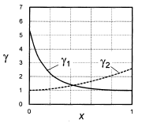
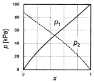
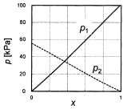
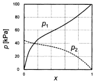
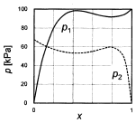
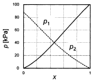

令和3年度 問28 有機化学及び燃料
図1は、低沸点成分（添字1）であるエタノールと、高沸点成分（添字2）である水の2成分系溶液の低沸点成分のモル分率xに対する活量係数γ1、γ2を示している。また、図2は5種の二成分系溶液について、低沸点成分の沸点温度での各成分の蒸気分圧p1、p2、1～5の中で、エタノール／水系の蒸気分圧と考えられるものはどれか。

①

②

③

④

⑤

正答
③
活量係数は、実在溶液の挙動が理想溶液からどの程度離れているかを表す指標です。理想溶液ではラウールの法則が成り立ちますが、実在溶液ではこの法則からの差が生じます。この差を表現するのが活量係数です。理想溶液では活量係数が1になります。
今回の場合、エタノールと水は全てγが0以上の値です。理想溶液よりも蒸気分圧が高くなります。
エタノールと水どちらもγの値は直線的ではなく曲線的な変化を示しています。またx＝0（水のみ）に近い時、γ1（エタノールの活量係数）は約5です。x＝1（エタノールのみ）に近い時、γ2（水の活量係数）は約2.5です。x＝0におけるP2の値よりx＝1におけるP1の値が2倍程度になるよう変化すると考えられます。
上記2点を考えると、最も近いグラフは3番です。